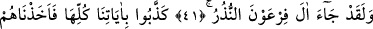
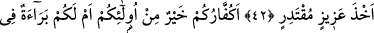
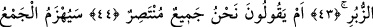
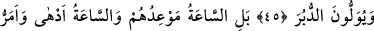
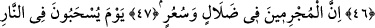
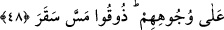
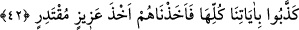

O TOPLULUK
YAKINDA BOZULACAK
41. Şüphesiz Firavun’un kavmine de uyarıcılar gelmişti.
42. Lâkin onlar bütün âyetlerimizi yalanladılar. Biz de onları güç ve kudretimize
lâyık bir şekilde yakaladık.
43. Şimdi sizin kâfirleriniz, onlardan daha mı iyidirler? Yoksa kitaplarda sizin için
bir berât mı var?
44. Yoksa «Biz, intikam almağa gücü yeten bir topluluğuz» mu diyorlar?
45. O topluluk yakında bozulacak ve onlar arkalarını dönüp kaçacaklardır.
46. Bilakis kıyâmet onlara vâdedilen asıl saattir ve o saat daha belâlı ve daha
acıdır.
47. Şüphesiz suçlular sapıklık ve çılgınlık içindedirler.
48. O gün yüzüstü ateşe sürüklendiklerinde «Cehennemin elemini tadın!» denir.
“Şüphesiz Firavun’un kavmine de uyarıcılar gelmişti.” Uyarılmağa daha lâyık
olduğu bilindiğinden Firavun anılmadan âile ferdleri zikredilmekle yetinilmiştir. Yâni
andolsun ki, onların hepsine Mûsâ (a.s.) ve Hârûn (a.s.) tarafından uyarmalar gelmiştir.
Burada “Onlar uyarıldıkları zaman ne yaptılar?” sorusuna böyle cevap verilmiş oluyor.
42. Lâkin onlar bütün âyetlerimizi yalanladılar. Biz de onları güç ve kudretimize
lâyık bir şekilde yakaladık.
“Lakin onlar bütün âyetlerimizi yalanladılar.” Yâni dokuz mûcizeyi yalanladılar.
Onlar; Mûsâ (a.s)’ın elinin hârika beyazlığı, asâ, tufan, çekirgeler, bit gibi haşere,